{kind=link}
{kind=link}
{kind=link}
{kind=link}
{kind=link}
{kind=link}

What wonderful red carpet. Our bedroom originally had hideous turquoise stuff, but I ripped that out.
Here's a collection of random photos of our house. It still is a mess, but it's slowly getting better. Maybe after the semester finishes I'll take some nice panorama shots and show everyone a bit more. You can click on a photo for a bigger version of it.
If you're interested, you can see a satellite view of our neighborhood here. It doesn't quite put our house at the correct location. Look on the street to the west of the marker, that's Nantasket St. There are two houses there with brownish roofs in a row. We're the top one. Our trip to school is now just a nice walk in the park. Take a look at the route we take to school. It's nice because we can walk through the valley and the paths. The satellite views don't capture it well, but Pittsburgh is pretty hilly, so we've got a fair amount of ups and downs to get back and forth.
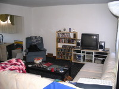
Our half set up living room. We're working on it still.
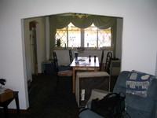
Looking into the dining room. We still have quite the mess going on.
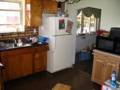
The kitchen. It's nice to have a bigger kitchen, but the floor is some weird
brown lineoleum. Yeck. The cabinets are in okay shape. We'll do some ghetto
remodeling soon when we get a real oven.
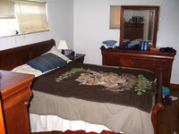
Our bedroom. The wood floors hidden beneath the carpet were in remarkably good
shape.
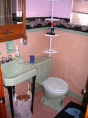
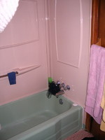
What were these people thinking for the color scheme here? Yeah, it's all
getting ripped out. This simply won't do.
What wonderful red carpet. Our bedroom originally had hideous turquoise stuff, but
I ripped that out.
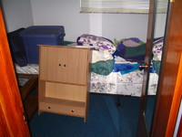
Tiny spare bedroom
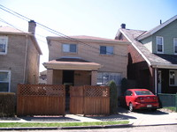
Front view of the house with our car in our parking spot.
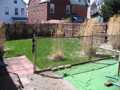
Looking at our back yard.
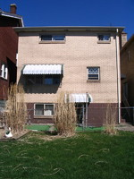
View from the back yard
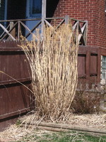
Anyone know what sort of plant these are? We were told to cut them down because they'll sprout back
up, so we did that today. Would be nice to know what they are though.
{kind=link}
{kind=link}
{kind=link}
{kind=link}
{kind=link}